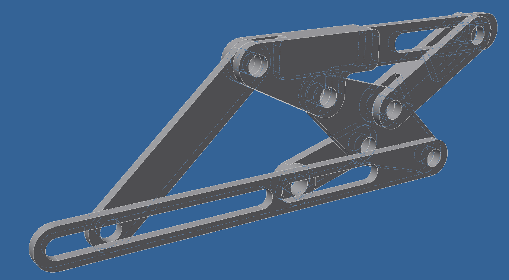
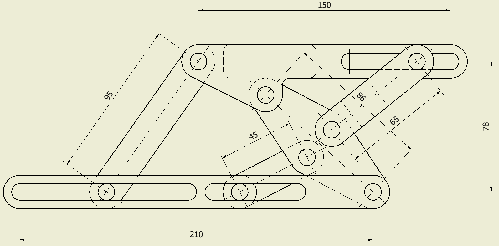

創意性機構設計實例報告
含耦合支鍊的平面兩自由度並聯機構
Planar two degree of freedom parallel mechanism with coupling branch
設計四乙 張元
Origin Mechanism
Degree of Freedom
\[ F=3(N_{L}-1)-2J_{R}-2J_{P} \] \[ N_{L}=9 \] \[ J_{R}=7 \] \[ J_{P}=4 \] \[ F=3(9-1)-2\times7-2\times4=+2 \]
Generalization

Calculation script

The Maximum Joint Number of Linkages
\[ N_{L}=9, N_{J}=11 \] \[ if(N_{L}\leq N_{J}\leq 2N_{L}-3) \] \[ m_{max}=N_{J}-N_{L}+2 \] \[ m_{max}=11-9+2=4 \]
Combinations
\[ \sum_{m=2}^{m_{max}}N_{L_{m}}=N_{L}, \sum_{m=2}^{m_{max}}mN_{L_{m}}=2N_{J} \]
\[ N_{L_{2}}+N_{L_{3}}+N_{L_{4}}=9 \] \[ 2N_{L_{2}}+3N_{L_{3}}+4N_{L_{4}}=22 \]
[5, 4, 0]
[6, 2, 1]
[7, 0, 2]
Requirements
- \[ N_{L_{ground}}=1 \]
- \[ N_{L_{output}}=1 \]
- \[ L_{ground}\neq L_{output} \]
- \[ N_{J_{input}}=2 \]
- \[ J_{input}\in J_{P} \]
Constraints
- Ground and output linkage are not connected.
- Number of joint of ground is same as output linkage.
Atlas

Target

Particularization

Dimensions
